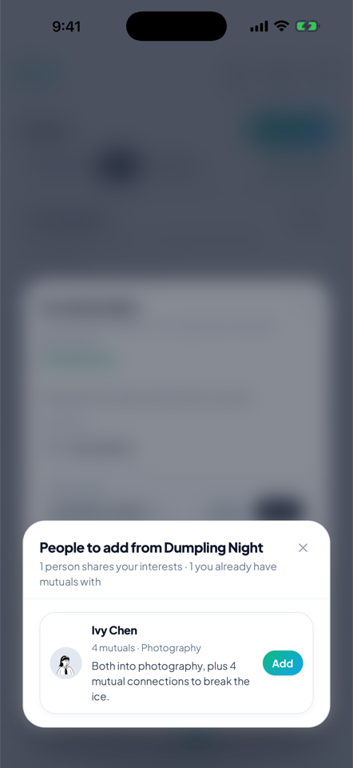
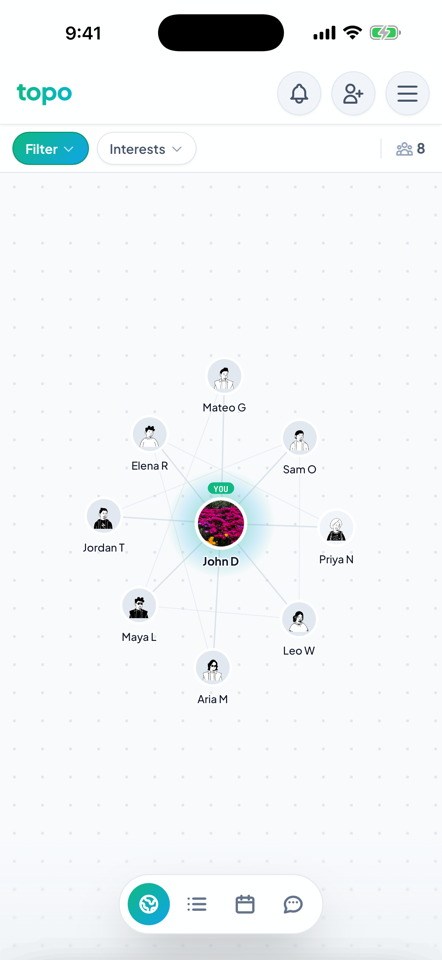
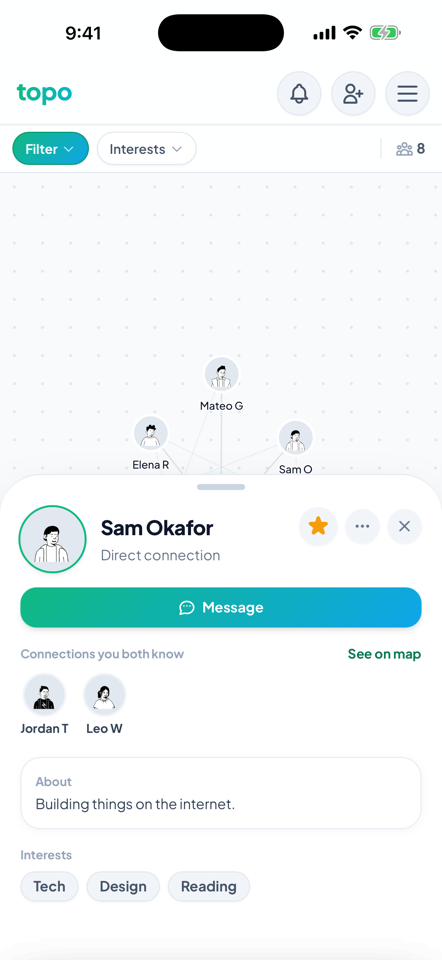

A map, not a list
topo draws your network as a map — your connections, the people they know, and how everyone fits together. Visible at a glance instead of buried in a list.
Free on the App Store · no feed, no ads.



The list in the phone above — ranked by mutuals and shared interests, whoever's already checked in first — runs before the event and during it too. Only the question changes.
“Who's going you should meet”
A reason to go, not just an RSVP list.
“Who's here you should meet”
Reordered live as people check in around you.
“People you should add”
Above — who you missed, while you still remember.
Not a dating app. Not a professional network. Not another feed.
Tap anyone to see how you know them.
Search their username, scan their code, or check your contacts — whichever's fastest. They get a request to accept, the same as any connection.
Yes — anyone on your map, not just direct connections. A friend of a friend gets a Message button on their profile even before you've connected.
Host one, or tap Have a code? and enter the one someone shared with you. Check in when you arrive and the map fills in with everyone else who's there.
In the app: Settings → Delete account. It takes effect immediately and removes your profile, connections, messages and the events you created. It cannot be undone.
Use Forgot password? on the sign-in screen. Sign-in takes your username, not your email address.